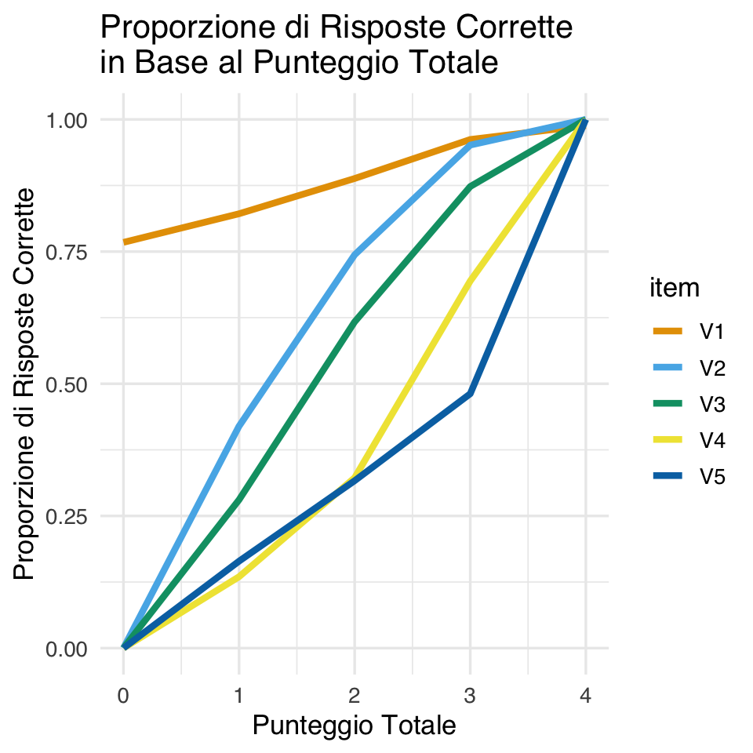

here::here("code", "_common.R") |>
source()
# Load packages
if (!requireNamespace("pacman")) install.packages("pacman")
pacman::p_load(mirt, ltm, grid, TAM, ggmirt, latex2exp)67 Modello di Rasch
In questo capitolo imparerai a
- comprendere le differenze fondamentali tra il Modello di Rasch e la Teoria Classica dei Test (CTT).
- Analizzare come il modello di Rasch descrive la relazione tra abilità dei rispondenti e difficoltà degli item.
- Interpretare i principali parametri del modello di Rasch, come l’abilità (\(\theta_p\)) e la difficoltà degli item (\(\beta_i\)).
- Riconoscere i vantaggi dell’approccio del modello di Rasch rispetto alla CTT, come la separazione tra attributi della persona e caratteristiche dell’item.
- Riflettere sui limiti e le assunzioni del modello di Rasch e sulle implicazioni di queste restrizioni per la psicometria applicata.
Prerequisiti
- Leggere il capitolo 8, Item Response Theory, del testo Principles of psychological assessment di Petersen (2024).
Preparazione del Notebook
67.1 Introduzione
La psicometria ha compiuto notevoli progressi con l’introduzione della Teoria della Risposta all’Item (IRT), un approccio innovativo che supera i limiti della Classica Teoria dei Test (CTT), particolarmente nella gestione e nella concettualizzazione degli errori di misurazione. A differenza della CTT, che si concentra sull’analisi del punteggio totale di un test, l’IRT esamina le risposte ai singoli item, fornendo una visione più dettagliata delle capacità individuali. Questa analisi si fonda su due elementi fondamentali: le caratteristiche degli item, che includono parametri come la difficoltà e la capacità discriminativa, e il livello di abilità del rispondente, che rappresenta la sua posizione su un continuum latente della capacità.
Il nucleo dell’IRT è la modellizzazione della probabilità che un individuo risponda correttamente a un determinato item, espressa come funzione del livello di abilità del rispondente e delle caratteristiche dell’item stesso. Questa relazione viene rappresentata graficamente attraverso le Curve Caratteristiche degli Item, che illustrano come la probabilità di risposta corretta varia in base al livello di abilità.
L’IRT presenta numerosi vantaggi. Offre una notevole flessibilità, consentendo di modellare sia risposte dicotomiche che categoriali o ordinali, molto comuni nei test psicometrici. L’analisi a livello di item permette di identificare item problematici, come quelli troppo facili o incapaci di discriminare tra rispondenti con diversi livelli di abilità. Inoltre, le stime di abilità non dipendono dagli item specifici somministrati, rendendo i test basati sull’IRT particolarmente adatti per applicazioni adattive. L’IRT fornisce anche una funzione di informazione del test che permette di valutare la precisione della misurazione per diversi livelli di abilità.
Tuttavia, l’IRT presenta anche alcune sfide. La stima affidabile dei parametri richiede campioni di dimensioni maggiori rispetto alla CTT, e i modelli, soprattutto quelli multidimensionali, necessitano di una padronanza di tecniche statistiche avanzate.
Nel contesto della psicometria moderna, è importante considerare anche la Mokken Scale Analysis (MSA), un approccio non parametrico per l’analisi di scale psicometriche. A differenza dell’IRT, la MSA non presuppone una forma specifica per le curve caratteristiche degli item, basandosi invece su criteri meno restrittivi come la monotonicità e l’indipendenza locale. La MSA risulta particolarmente utile per verificare la struttura della scala e individuare item problematici, rappresentando spesso un ottimo punto di partenza per analisi preliminari, specialmente con campioni di dimensioni ridotte.
Un approccio efficace all’analisi psicometrica può prevedere l’integrazione di MSA e IRT. Si può iniziare con una valutazione preliminare degli item e della scala attraverso la MSA, per poi passare a un’analisi più approfondita mediante l’IRT. Questa combinazione permette di sfruttare i punti di forza di entrambi gli approcci: la MSA offre una valutazione iniziale della scalabilità e della coerenza interna degli item, mentre l’IRT fornisce una modellizzazione dettagliata degli item e delle abilità latenti, con una precisa valutazione della scala.
In conclusione, l’IRT rappresenta una pietra miliare nella psicometria moderna, offrendo strumenti sofisticati per l’analisi di item e abilità latenti. Tuttavia, la Mokken Scale Analysis mantiene la sua utilità, particolarmente in fasi esplorative o in contesti con dati limitati. Una comprensione integrata di entrambi gli approcci consente una valutazione più completa e robusta delle scale psicometriche, permettendo ai ricercatori di scegliere gli strumenti più appropriati in base alle specifiche esigenze del loro studio.
67.2 Curve Caratteristiche degli Item
Un concetto fondamentale nell’IRT è la Curva Caratteristica dell’Item (Item Characteristic Curve, ICC), che rappresenta graficamente la relazione tra il livello di abilità latente di un individuo e la sua probabilità di rispondere correttamente a un determinato item o di manifestare un comportamento specifico. Questa relazione viene tipicamente modellata attraverso una funzione logistica che genera una curva a forma di S (sigmoide), dove la probabilità di risposta corretta varia in modo sistematico con il livello di abilità: è molto bassa per individui con scarse capacità, aumenta rapidamente nella fascia intermedia e tende asintoticamente al massimo per i livelli più elevati di abilità, senza mai raggiungerlo completamente.
Le ICC rappresentano uno strumento prezioso per valutare la qualità degli item di un test, fornendo informazioni cruciali su diversi aspetti. Attraverso l’analisi della forma e dei parametri di una ICC, è possibile determinare la difficoltà dell’item, misurata dal livello di abilità necessario per ottenere una probabilità del 50% di risposta corretta. Si può inoltre valutare la discriminatività dell’item, ovvero la sua capacità di distinguere efficacemente tra individui con diversi livelli di abilità. Nei modelli più sofisticati, è anche possibile stimare la probabilità che un rispondente con bassa abilità fornisca una risposta corretta per caso.
L’analisi delle ICC permette inoltre di identificare diverse problematiche comuni negli item. L’effetto soffitto si manifesta quando un item risulta troppo facile, portando quasi tutti i partecipanti a rispondere correttamente indipendentemente dal loro livello di abilità, rendendo così l’item poco utile per la misurazione del costrutto. Al contrario, l’effetto pavimento si verifica quando un item è talmente difficile che solo gli individui con abilità molto elevate riescono a rispondere correttamente. Un altro problema frequente è la bassa discriminatività, che si presenta quando l’item non riesce a differenziare efficacemente tra individui con diversi livelli di abilità.
Le Curve Caratteristiche degli Item si rivelano quindi uno strumento essenziale nell’ambito dell’IRT, offrendo una rappresentazione chiara e dettagliata della relazione tra le abilità latenti e le prestazioni sugli item. La loro capacità di evidenziare le caratteristiche specifiche di ciascun item le rende fondamentali per il miglioramento della qualità e dell’affidabilità dei test psicometrici. Attraverso l’analisi delle ICC, è possibile ottimizzare la misurazione, assicurando che ogni item contribuisca in modo efficace alla valutazione del costrutto di interesse. Quando vengono identificati problemi rilevanti attraverso l’analisi delle ICC, gli item possono essere sottoposti a revisione o, se necessario, eliminati dal test, garantendo così la massima precisione nella misurazione dei costrutti psicologici.
67.3 La Scala di Guttman
Per comprendere meglio la teoria alla base delle ICC, è utile iniziare dalla Scala di Guttman, che stabilisce una relazione gerarchica tra la difficoltà degli item e le abilità degli individui. In una Scala di Guttman ideale, si assume che una persona con un determinato livello di abilità risponda correttamente a tutti gli item meno difficili e sbagli quelli più difficili. Questo modello si può rappresentare attraverso una matrice di risposte dove 1 indica una risposta corretta e 0 una risposta errata: in una scala perfetta, le risposte corrette si accumulano progressivamente man mano che il livello di abilità dell’individuo aumenta.
La seguente tabella mostra un esempio di una Scala di Guttman perfetta per cinque item.
| Pattern di risposta | Item 1 | Item 2 | Item 3 | Item 4 | Item 5 |
|---|---|---|---|---|---|
| 1 | 0 | 0 | 0 | 0 | 0 |
| 2 | 1 | 0 | 0 | 0 | 0 |
| 3 | 1 | 1 | 0 | 0 | 0 |
| 4 | 1 | 1 | 1 | 0 | 0 |
| 5 | 1 | 1 | 1 | 1 | 0 |
| 6 | 1 | 1 | 1 | 1 | 1 |
In questo modello ideale, le risposte corrette si accumulano man mano che il livello di abilità dell’individuo aumenta.
Graficamente, la Scala di Guttman può essere rappresentata tramite curve caratteristiche degli item che mostrano, sull’asse verticale, la probabilità di rispondere correttamente a un item (che nel modello ideale è binaria: 1 o 0) e sull’asse orizzontale il livello di abilità dell’individuo. In questo modello ideale, un individuo risponde correttamente a tutti gli item con difficoltà inferiore o uguale al proprio livello di abilità, mentre sbaglia quelli con difficoltà superiore, creando così un modello di risposta perfettamente prevedibile.
Le frecce nel grafico seguente rappresentano cinque individui con diversi livelli di abilità. Ogni freccia indica il punto in cui l’abilità di una persona interseca le curve caratteristiche degli item. Secondo il modello ideale, ogni persona dovrebbe rispondere correttamente a tutti gli item posizionati a sinistra della propria abilità sul grafico (item meno difficili) e sbagliare quelli a destra (item più difficili).
Tuttavia, questo modello deterministico raramente si osserva nei dati reali, dove intervengono numerosi fattori che introducono variabilità nelle risposte. Le persone con lo stesso livello di abilità possono rispondere diversamente agli stessi item, gli item possono presentare ambiguità nella loro formulazione, e fattori come motivazione, attenzione e contesto possono influenzare significativamente le risposte.
È proprio da queste limitazioni del modello di Guttman che emerge la necessità di un approccio probabilistico, che viene sviluppato nel modello di Rasch. Quest’ultimo mantiene l’idea fondamentale della relazione gerarchica tra abilità e difficoltà, ma introduce una componente probabilistica che permette di gestire le deviazioni dal modello ideale, offrendo così una rappresentazione più realistica del processo di risposta agli item.
Il modello di Rasch, che verrà approfondito nella prossima sezione, può essere visto come un’evoluzione naturale della Scala di Guttman, dove le transizioni nette tra risposta corretta e incorretta vengono sostituite da una curva logistica che descrive la probabilità di risposta corretta come una funzione continua dell’abilità. Questo passaggio da un modello deterministico a uno probabilistico rappresenta un avanzamento fondamentale nella teoria psicometrica, permettendo una modellizzazione più accurata e flessibile dei dati reali.
67.4 Il Modello di Rasch
Il modello di Rasch rappresenta un’importante evoluzione nella psicometria, consentendo di superare i limiti dello scaling di Guttman. Questo modello si basa sul concetto di variabile latente, una caratteristica non direttamente osservabile ma inferita attraverso comportamenti misurabili, come le risposte a un test. Ad esempio, la competenza matematica può essere vista come una variabile latente stimata analizzando le risposte corrette e errate di un individuo in un test composto da più domande.
Secondo il modello di Rasch, sia la competenza degli individui sia la difficoltà degli item sono rappresentate lungo un continuum latente. Gli individui con abilità più elevate si trovano verso l’estremità superiore del continuum, mentre quelli con abilità inferiori si collocano verso l’estremità inferiore. Analogamente, le domande del test (gli item) sono posizionate lungo il continuum in base alla loro difficoltà, indicata dal parametro \(\beta_i\) per ciascun item \(i\). La posizione di una persona sul continuum è rappresentata dal parametro \(\theta_p\), che riflette il livello di abilità latente dell’individuo \(p\).
La probabilità che un partecipante risponda correttamente a un determinato item dipende dalla differenza tra l’abilità del partecipante (\(\theta_p\)) e la difficoltà dell’item (\(\beta_i\)). Se \(\theta_p\) è molto maggiore di \(\beta_i\), la probabilità di una risposta corretta è alta; se \(\theta_p\) è inferiore a \(\beta_i\), la probabilità è bassa. Quando \(\theta_p\) è circa uguale a \(\beta_i\), la probabilità si avvicina al 50%, riflettendo incertezza nella risposta.
Esercizio 67.1 Consideriamo un test con cinque domande (item) utilizzato per valutare la competenza matematica. Le risposte dei partecipanti (corrette o errate) costituiscono i dati osservabili. La difficoltà di ciascun item può essere stimata calcolando la proporzione di risposte corrette per ogni domanda.
Importiamo i dati in R.
# Importazione dei dati
math_dat <- rio::import(here::here("data", "deAyala", "Math.txt"))
head(math_dat)
#> V1 V2 V3 V4 V5
#> 1 1 1 0 0 0
#> 2 1 1 1 0 0
#> 3 1 0 0 0 0
#> 4 1 1 1 0 0
#> 5 1 0 1 1 0
#> 6 1 1 1 0 0
# Calcolo della difficoltà degli item
colMeans(math_dat)
#> V1 V2 V3 V4 V5
#> 0.887 0.644 0.566 0.427 0.387Gli item sono ordinati per difficoltà crescente: il primo è il più facile, mentre l’ultimo è il più difficile.
Per analizzare la relazione tra il punteggio totale di ciascun partecipante e la proporzione di risposte corrette per ogni item, possiamo generare un grafico.
# Calcolo dei punteggi totali
math_dat2 <- math_dat
math_dat2$total_score <- rowSums(math_dat2[, -1])
# Preparazione dati per il grafico
plot_data <- lapply(names(math_dat2)[1:5], function(item) {
math_dat2 %>%
group_by(total_score) %>%
summarise(proportion = mean(get(item) == 1)) %>%
mutate(item = item)
})
plot_data <- do.call(rbind, plot_data)
# Creazione del grafico
ggplot(
plot_data,
aes(x = total_score, y = proportion, group = item, color = item)
) +
geom_line(linewidth = 1.5) +
labs(
x = "Punteggio Totale",
y = "Proporzione di Risposte Corrette",
title = "Proporzione di Risposte Corrette\nin Base al Punteggio Totale"
)
67.4.1 Curve Caratteristiche degli Item (ICC)
Le curve caratteristiche degli item (ICC) forniscono una rappresentazione grafica della probabilità di risposta corretta in funzione del livello di abilità latente. Nel modello di Rasch, questa relazione è descritta da una funzione logistica:
\[ P(X_{pi} = 1 | \theta_p, \beta_i) = \frac{1}{1 + e^{-(\theta_p - \beta_i)}}. \tag{67.1}\]
Questa equazione mostra che la probabilità di una risposta corretta è determinata esclusivamente dalla differenza tra \(\theta_p\) (abilità del partecipante) e \(\beta_i\) (difficoltà dell’item). La forma sigmoide della curva riflette tre situazioni:
- quando \(\theta_p\) è molto maggiore di \(\beta_i\), la probabilità è vicina a 1;
- quando \(\theta_p\) è molto minore di \(\beta_i\), la probabilità è vicina a 0;
- quando \(\theta_p\) è circa uguale a \(\beta_i\), la probabilità è prossima a 0.5.
Nel grafico delle ICC, gli item facili (\(\beta_i < 0\)) mostrano alte probabilità di risposta corretta anche per partecipanti con abilità modeste, mentre gli item difficili (\(\beta_i > 0\)) richiedono abilità elevate per ottenere una risposta corretta.
# Creazione del modello di Rasch e grafico delle ICC
rasch_model <- rasch(math_dat)
plot(rasch_model, type = "ICC")Le curve mostrano che, nel modello di Rasch, la difficoltà degli item è il parametro principale che varia, mentre la pendenza delle curve rimane costante, confermando l’assunto fondamentale del modello.
67.4.2 Interpretazione Pratica
Nel contesto dei test psicometrici, il modello di Rasch dell’Equazione 67.1 offre un approccio rigoroso per interpretare i dati dei test psicometrici. La stima delle difficoltà degli item (\(\beta_i\)) e delle abilità dei partecipanti (\(\theta_p\)) permette di verificare la coerenza tra gli item e di identificare eventuali problematiche, come:
- Item troppo facili: risolti correttamente da quasi tutti i partecipanti, indipendentemente dal livello di abilità.
- Item troppo difficili: risolti solo dai partecipanti con abilità molto elevate, contribuendo poco alla misurazione complessiva.
La relazione tra abilità e difficoltà è descritta dall’Equazione 67.1. Questa equazione trasforma la differenza \(\theta_p - \beta_i\), che teoricamente può variare da \(-\infty\) a \(+\infty\), in una probabilità compresa tra 0 e 1. In termini pratici:
- Quando \(\theta_p\) è molto maggiore di \(\beta_i\), la probabilità di una risposta corretta è vicina a 1.
- Quando \(\theta_p\) è molto minore di \(\beta_i\), la probabilità si avvicina a 0.
- Quando \(\theta_p \approx \beta_i\), la probabilità è circa 0.5, indicando incertezza.
Sebbene i parametri \(\theta_p\) (abilità) e \(\beta_i\) (difficoltà) possano teoricamente assumere qualsiasi valore, nella pratica si collocano generalmente tra -3 e +3. Questo intervallo rappresenta una scala standardizzata, utile per interpretare i livelli di abilità e difficoltà:
- Item facili (\(\beta_i < 0\)): sono generalmente risolti correttamente anche da persone con abilità modeste.
- Item difficili (\(\beta_i > 0\)): richiedono abilità elevate per essere superati.
- Item intermedi (\(\beta_i \approx 0\)): massima capacità discriminativa vicino alla media.
Questa rappresentazione permette di identificare con precisione le caratteristiche di ciascun item e di valutare se contribuisce efficacemente alla misurazione del tratto latente. Ad esempio, item che risultano troppo facili o troppo difficili forniscono meno informazioni utili rispetto a quelli con difficoltà intermedia.
In sintesi, il modello di Rasch è uno strumento fondamentale per costruire test psicometrici affidabili, in grado di misurare con precisione abilità, atteggiamenti e tratti di personalità.
67.4.3 Rappresentazioni Alternative della Funzione Logistica
La funzione logistica utilizzata nel modello di Rasch può essere scritta in due modi: con la funzione esponenziale sia al numeratore sia al denominatore (a sinistra), oppure equivalentemente con la funzione esponenziale solo al denominatore, seguita dal suo argomento negativo (a destra):
\[ \frac{\exp(\theta_p - \beta_i)}{1 + \exp(\theta_p - \beta_i)} = \frac{1}{1 + \exp(-(\theta_p - \beta_i))} \]
Per dimostrare l’equivalenza delle due espressioni della funzione logistica nel modello di Rasch, seguiamo i seguenti passaggi algebrici. Per semplificare il lato destro, utilizziamo la proprietà dell’esponenziale che afferma \(e^{-x} = \frac{1}{e^x}\). Quindi, riscriviamo \(\exp(-(\theta_p - \beta_i))\) come \(\frac{1}{\exp(\theta_p - \beta_i)}\):
\[ \frac{1}{1 + \frac{1}{\exp(\theta_p - \beta_i)}} \]
Il denominatore del lato destro diventa \(1 + \frac{1}{\exp(\theta_p - \beta_i)}\). Per combinare i termini nel denominatore, otteniamo un denominatore comune:
\[ \frac{1}{\frac{\exp(\theta_p - \beta_i) + 1}{\exp(\theta_p - \beta_i)}} \]
Simplificando ulteriormente, il denominatore diventa \(\exp(\theta_p - \beta_i) + 1\), quindi l’intera espressione diventa:
\[ \frac{1}{\exp(\theta_p - \beta_i) + 1} \]
Possiamo ora invertire la frazione per ottenere il lato sinistro dell’equazione originale:
\[ \frac{\exp(\theta_p - \beta_i)}{\exp(\theta_p - \beta_i) + 1} \]
Quindi, abbiamo dimostrato che il lato sinistro e il lato destro dell’equazione originale sono effettivamente equivalenti.
Esercizio 67.2 Per illustrare come il modello di Rasch venga utilizzato per calcolare i punti su una curva caratteristica dell’item, consideriamo il seguente problema. I valori dei parametri dell’item sono:
- a = 1 è il parametro di discriminazione dell’item,
- b = -0.5 è il parametro di difficoltà dell’item.
Troviamo la probabilità di rispondere correttamente a questo item al livello di abilità theta = 1.5.
icc <- function(a, b, theta) {
1 / (1 + exp(-a * (theta - b)))
}
a = 1
b = -0.5
theta = 1.5
icc(a, b, theta)
#> [1] 0.881theta_range <- seq(-3, 3, .1)
plot(theta_range, icc(a, b, theta_range),
type = "l", xlim = c(-3, 3), ylim = c(0, 1),
xlab = "Ability", ylab = "Probability of Correct Response"
)
points(theta, icc(a, b, theta), cex=2)
segments(-3, icc(a, b, theta), theta, icc(a, b, theta), lty = "dashed")
segments(theta, icc(a, b, theta), theta, 0, lty = "dashed")67.5 La Proprietà di Oggettività Specifica
Una caratteristica distintiva del modello di Rasch è la oggettività specifica, che garantisce che la differenza tra i logit delle probabilità di rispondere correttamente a due item \(i\) e \(j\) sia costante per qualsiasi livello di abilità \(\theta\). In altre parole, il confronto tra due item dipende esclusivamente dalla loro difficoltà e non dall’abilità del rispondente, realizzando così un principio fondamentale di misurazione oggettiva.
Nel modello di Rasch, la probabilità di rispondere correttamente a un item viene trasformata in logit, cioè il logaritmo delle quote tra la probabilità di una risposta corretta e quella di una risposta errata. Il logit è definito come:
\[ \log \left( \frac{\text{Pr}(U_{pi} = 1 \mid \theta_p, \beta_i)}{\text{Pr}(U_{pi} = 0 \mid \theta_p, \beta_i)} \right) = \theta_p - \beta_i, \]
dove:
- \(\theta_p\) è l’abilità latente del partecipante \(p\),
- \(\beta_i\) è la difficoltà dell’item \(i\).
La probabilità \(\pi\) di rispondere correttamente a un item è calcolata attraverso la funzione logistica:
\[ \pi = \frac{\exp(\theta_p - \beta_i)}{1 + \exp(\theta_p - \beta_i)}. \]
Il complemento della probabilità, ossia la probabilità di rispondere in modo errato, è:
\[ 1 - \pi = \frac{1}{1 + \exp(\theta_p - \beta_i)}. \]
Le quote \(O\) sono definite come il rapporto tra la probabilità di successo e quella di insuccesso:
\[ O = \exp(\theta_p - \beta_i). \]
Il logaritmo delle quote corrisponde direttamente al logit:
\[ \log(O) = \theta_p - \beta_i. \]
Questa relazione evidenzia che i logit sono proporzionali alla differenza tra l’abilità del partecipante e la difficoltà dell’item.
Un aumento della differenza \(\theta_p - \beta_i\) si traduce in una maggiore probabilità di successo (\(\pi\)):
- Valori alti di \(\theta_p - \beta_i\): indicano che l’abilità supera la difficoltà, con una probabilità di successo vicina a 1.
- Valori bassi di \(\theta_p - \beta_i\): indicano che la difficoltà supera l’abilità, con una probabilità di successo vicina a 0.
In sintesi, la proprietà di oggettività specifica assicura che il modello di Rasch fornisca una misurazione consistente e comparabile degli item e delle abilità, indipendentemente dal contesto o dai partecipanti coinvolti.
67.6 Implicazioni della Proprietà di Oggettività Specifica
L’oggettività specifica nel modello di Rasch significa che il confronto tra due item è indipendente dall’abilità dei rispondenti. Nella pratica, ciò si traduce nel fatto che le curve caratteristiche degli item (ICC) per diversi item sono parallele lungo la scala dei logit. Questa parallelismo deriva dal fatto che la differenza tra i logit di due item, \(\beta_i\) e \(\beta_j\), è costante per tutti i valori di abilità \(\theta_p\).
Le curve per item con diverse difficoltà
- hanno pendenze identiche, riflettendo che il tasso di variazione della probabilità rispetto a \(\theta_p\) è uguale per tutti gli item;
- non si intersecano mai lungo l’asse delle abilità, poiché ogni differenza tra le probabilità di risposta corretta è attribuibile esclusivamente alla differenza di difficoltà tra gli item (\(\beta_j - \beta_i\));
- si spostano verticalmente lungo l’asse delle probabilità in base alla difficoltà dell’item, mantenendo una rappresentazione coerente del rapporto tra abilità e probabilità di risposta corretta.
La rappresentazione logit
- consente il calcolo della probabilità di risposta corretta indipendentemente dal set di item somministrati, garantendo comparabilità tra diversi test.
- rende le differenze tra item facilmente interpretabili, attribuendo ogni variazione a una caratteristica misurabile (la difficoltà) e non a fattori confondenti come il livello di abilità dei partecipanti.
Questa struttura garantisce misure eque e precise, promuovendo un’interpretazione robusta dei dati raccolti.
# Creazione di un dataframe con i valori di abilità (theta_p) e le difficoltà degli item (beta)
theta_p <- seq(-3, 3, length.out = 100)
beta_i <- -1
beta_j <- 1
# Calcolo dei logit per gli item i e j
logit_i <- theta_p - beta_i
logit_j <- theta_p - beta_j
data <- data.frame(
Ability = c(theta_p, theta_p),
Logit = c(logit_i, logit_j),
Item = factor(c(rep("Item i (beta_i = -1)", length(theta_p)), rep("Item j (beta_j = 1)", length(theta_p))))
)
ggplot(data, aes(x = Ability, y = Logit, color = Item)) +
geom_line() +
scale_color_manual(values = c("blue", "red")) +
ggtitle(TeX("Parallel Lines for Item i and j in the Rasch Model")) +
xlab(TeX("Ability ($\\theta_p$)")) +
ylab(TeX("Logit Probability"))67.7 Il Modello di Rasch e l’Analisi Fattoriale
Per comprendere meglio il Modello di Rasch, può essere utile confrontarlo con l’Analisi Fattoriale. Sebbene si basino su approcci metodologici differenti, entrambi condividono l’obiettivo di individuare le dimensioni latenti che influenzano le risposte osservate nei dati. Questo confronto evidenzia somiglianze e differenze, fornendo una prospettiva più chiara sui due metodi.
Nell’Analisi Fattoriale, il modello tipico è espresso come \(Y_i = \lambda_i \xi + \delta_i\), dove \(Y_i\) è il punteggio osservato per l’item i-esimo, \(\lambda_i\) rappresenta la saturazione fattoriale che indica quanto l’item è influenzato dal fattore latente \(\xi\), e \(\delta_i\) è il termine di errore specifico per quell’item. L’idea centrale è che, controllando per \(\xi\), le correlazioni tra gli item \(Y_i\) diventano nulle, poiché qualsiasi associazione comune è spiegata dal fattore latente.
Il Modello di Rasch, pur perseguendo lo stesso obiettivo generale, adotta un approccio diverso. Esso si concentra sull’analisi di risposte dicotomiche (0 o 1) e presuppone che la probabilità di una risposta corretta sia una funzione logistica dell’abilità del rispondente \(\theta\) e della difficoltà dell’item \(\delta_i\).
La differenza cruciale tra il Modello di Rasch e l’Analisi Fattoriale risiede nella trattazione dei parametri degli item:
-
Potere discriminante:
- Nell’Analisi Fattoriale, le saturazioni fattoriali (\(\lambda_i\)) variano tra gli item, riflettendo differenze nella capacità degli item di rappresentare la dimensione latente.
- Nel Modello di Rasch, tutti gli item hanno lo stesso potere discriminante. Si presume che siano ugualmente efficaci nel distinguere tra rispondenti con abilità diverse.
-
Focus sui parametri:
- L’Analisi Fattoriale si concentra sull’identificazione delle saturazioni fattoriali (\(\lambda_i\)) per ciascun item e sull’individuazione dei fattori latenti comuni.
- Il Modello di Rasch stima l’abilità dei rispondenti (\(\theta\)) e la difficoltà degli item (\(\delta_i\)), presupponendo un’equivalenza nella discriminazione tra gli item.
In conclusione, sia il Modello di Rasch che l’Analisi Fattoriale mirano a spiegare le risposte osservate attraverso una dimensione latente. Tuttavia:
- L’Analisi Fattoriale enfatizza le relazioni tra gli item, stimando saturazioni fattoriali per descrivere come ogni item contribuisce alla dimensione latente comune.
- Il Modello di Rasch si focalizza sull’interazione tra l’abilità del rispondente e la difficoltà dell’item, fornendo una rappresentazione dettagliata delle dinamiche che influenzano le risposte dicotomiche.
Questi due approcci, pur perseguendo finalità analoghe, si applicano a contesti e dati differenti, completandosi a vicenda nel panorama della psicometria.
67.8 Riflessioni Conclusive
Il modello di Rasch si differenzia notevolmente dalla Teoria Classica dei Test (CTT) grazie a una serie di caratteristiche fondamentali che ne fanno uno strumento di analisi psicometrica più sofisticato e dettagliato.
67.8.1 Principali Differenze tra Rasch e CTT
-
Livello di Analisi
- La CTT si concentra sull’analisi aggregata dell’intero test, descrivendo il punteggio totale come \(X = T + E\), dove \(T\) rappresenta il punteggio vero e \(E\) l’errore di misurazione. Questo approccio si limita a una visione complessiva delle misure, senza approfondire le dinamiche specifiche degli item.
- Al contrario, il modello di Rasch analizza la probabilità di una risposta corretta per ciascun item, offrendo un’analisi dettagliata a livello di singolo item e consentendo una comprensione approfondita del funzionamento di ogni elemento del test.
- La CTT si concentra sull’analisi aggregata dell’intero test, descrivendo il punteggio totale come \(X = T + E\), dove \(T\) rappresenta il punteggio vero e \(E\) l’errore di misurazione. Questo approccio si limita a una visione complessiva delle misure, senza approfondire le dinamiche specifiche degli item.
-
Approccio Focalizzato sugli Item
- Mentre la CTT utilizza un approccio basato sulla somma delle risposte, il modello di Rasch, seguendo il paradigma proposto da Guttman, analizza direttamente le risposte osservate, modellandone le probabilità. Questo cambio di prospettiva migliora la precisione e riduce gli errori di misurazione.
67.8.2 Vantaggi del Modello di Rasch
-
Precisione e Dettaglio
- L’analisi item per item permette di identificare specifiche aree di forza o debolezza sia nei rispondenti sia nei test stessi. Ciò consente di migliorare gli strumenti di misura e garantisce stime più accurate delle abilità individuali.
-
Separazione tra Attributi della Persona e Caratteristiche dell’Item
- Il modello di Rasch distingue nettamente tra l’abilità del rispondente (\(\theta_p\)) e la difficoltà dell’item (\(\beta_i\)). Questa separazione assicura che la difficoltà di un item sia una proprietà intrinseca e stabile, indipendente dal campione di rispondenti, migliorando la coerenza e la generalizzabilità delle misure.
-
Flessibilità nei Modelli di Risposta
- Il modello di Rasch può essere applicato a una vasta gamma di formati di domanda, come domande dicotomiche, scale Likert e risposte aperte. Questa versatilità lo rende adatto a misurare una varietà di costrutti psicologici.
-
Valutazione Adattiva
- Integrato nell’ambito dell’Item Response Theory (IRT), il modello di Rasch supporta valutazioni adattive, in cui gli item somministrati variano in base al livello di abilità del rispondente. Ciò riduce gli errori di misurazione e fornisce stime più precise e mirate.
-
Analisi Approfondita degli Item
- Il modello consente di valutare in dettaglio le caratteristiche degli item, come difficoltà, discriminazione e parametri di indovinamento, fornendo informazioni utili per migliorare la qualità dei test.
67.8.3 Limiti e Critiche
Nonostante i numerosi vantaggi, il modello di Rasch è talvolta criticato per le sue assunzioni restrittive, che includono:
- La presunzione di un potere discriminante uguale per tutti gli item.
- La dipendenza da una funzione logistica semplice per modellare le risposte.
Queste assunzioni possono ridurre la capacità del modello di catturare la complessità delle risposte in scenari reali. Tuttavia, le sue basi teoriche solide garantiscono un’analisi robusta, in grado di mantenere l’invarianza delle proprietà degli item e delle abilità dei rispondenti attraverso diversi contesti e campioni.
In conclusione, il modello di Rasch rappresenta un notevole passo avanti rispetto alla CTT, offrendo una misurazione più precisa e flessibile, capace di adattarsi a molteplici contesti psicometrici. Nonostante le critiche, rimane uno strumento essenziale per la costruzione, la valutazione e il miglioramento dei test psicologici, consentendo un’analisi dettagliata e affidabile delle risposte osservate.
67.9 Session Info
sessionInfo()
#> R version 4.4.2 (2024-10-31)
#> Platform: aarch64-apple-darwin20
#> Running under: macOS Sequoia 15.3.1
#>
#> Matrix products: default
#> BLAS: /Library/Frameworks/R.framework/Versions/4.4-arm64/Resources/lib/libRblas.0.dylib
#> LAPACK: /Library/Frameworks/R.framework/Versions/4.4-arm64/Resources/lib/libRlapack.dylib; LAPACK version 3.12.0
#>
#> locale:
#> [1] C/UTF-8/C/C/C/C
#>
#> time zone: Europe/Rome
#> tzcode source: internal
#>
#> attached base packages:
#> [1] grid stats4 stats graphics grDevices utils datasets
#> [8] methods base
#>
#> other attached packages:
#> [1] latex2exp_0.9.6 ggmirt_0.1.0 TAM_4.2-21 CDM_8.2-6
#> [5] mvtnorm_1.3-3 ltm_1.2-0 polycor_0.8-1 msm_1.8.2
#> [9] mirt_1.44.0 lattice_0.22-6 ggokabeito_0.1.0 see_0.10.0
#> [13] MASS_7.3-64 viridis_0.6.5 viridisLite_0.4.2 ggpubr_0.6.0
#> [17] ggExtra_0.10.1 gridExtra_2.3 patchwork_1.3.0 bayesplot_1.11.1
#> [21] semTools_0.5-6 semPlot_1.1.6 lavaan_0.6-19 psych_2.4.12
#> [25] scales_1.3.0 markdown_1.13 knitr_1.49 lubridate_1.9.4
#> [29] forcats_1.0.0 stringr_1.5.1 dplyr_1.1.4 purrr_1.0.4
#> [33] readr_2.1.5 tidyr_1.3.1 tibble_3.2.1 ggplot2_3.5.1
#> [37] tidyverse_2.0.0 here_1.0.1
#>
#> loaded via a namespace (and not attached):
#> [1] splines_4.4.2 later_1.4.1 R.oo_1.27.0
#> [4] XML_3.99-0.18 rpart_4.1.24 lifecycle_1.0.4
#> [7] Rdpack_2.6.2 rstatix_0.7.2 rprojroot_2.0.4
#> [10] globals_0.16.3 rockchalk_1.8.157 backports_1.5.0
#> [13] magrittr_2.0.3 openxlsx_4.2.8 Hmisc_5.2-2
#> [16] rmarkdown_2.29 yaml_2.3.10 httpuv_1.6.15
#> [19] qgraph_1.9.8 zip_2.3.2 sessioninfo_1.2.3
#> [22] pbapply_1.7-2 minqa_1.2.8 multcomp_1.4-28
#> [25] abind_1.4-8 audio_0.1-11 expm_1.0-0
#> [28] quadprog_1.5-8 R.utils_2.12.3 nnet_7.3-20
#> [31] TH.data_1.1-3 sandwich_3.1-1 listenv_0.9.1
#> [34] testthat_3.2.3 RPushbullet_0.3.4 vegan_2.6-10
#> [37] arm_1.14-4 parallelly_1.42.0 permute_0.9-7
#> [40] codetools_0.2-20 tidyselect_1.2.1 farver_2.1.2
#> [43] lme4_1.1-36 base64enc_0.1-3 jsonlite_1.8.9
#> [46] progressr_0.15.1 Formula_1.2-5 survival_3.8-3
#> [49] emmeans_1.10.7 tools_4.4.2 rio_1.2.3
#> [52] snow_0.4-4 Rcpp_1.0.14 glue_1.8.0
#> [55] mnormt_2.1.1 admisc_0.37 xfun_0.50
#> [58] mgcv_1.9-1 withr_3.0.2 beepr_2.0
#> [61] fastmap_1.2.0 boot_1.3-31 digest_0.6.37
#> [64] mi_1.1 timechange_0.3.0 R6_2.5.1
#> [67] mime_0.12 estimability_1.5.1 colorspace_2.1-1
#> [70] gtools_3.9.5 jpeg_0.1-10 R.methodsS3_1.8.2
#> [73] generics_0.1.3 data.table_1.16.4 corpcor_1.6.10
#> [76] SimDesign_2.18 htmlwidgets_1.6.4 pkgconfig_2.0.3
#> [79] sem_3.1-16 gtable_0.3.6 brio_1.1.5
#> [82] htmltools_0.5.8.1 carData_3.0-5 png_0.1-8
#> [85] reformulas_0.4.0 rstudioapi_0.17.1 tzdb_0.4.0
#> [88] reshape2_1.4.4 coda_0.19-4.1 checkmate_2.3.2
#> [91] nlme_3.1-167 curl_6.2.0 nloptr_2.1.1
#> [94] zoo_1.8-12 parallel_4.4.2 miniUI_0.1.1.1
#> [97] foreign_0.8-88 pillar_1.10.1 vctrs_0.6.5
#> [100] promises_1.3.2 car_3.1-3 OpenMx_2.21.13
#> [103] xtable_1.8-4 Deriv_4.1.6 cluster_2.1.8
#> [106] dcurver_0.9.2 GPArotation_2024.3-1 htmlTable_2.4.3
#> [109] evaluate_1.0.3 pbivnorm_0.6.0 cli_3.6.3
#> [112] kutils_1.73 compiler_4.4.2 rlang_1.1.5
#> [115] future.apply_1.11.3 ggsignif_0.6.4 labeling_0.4.3
#> [118] fdrtool_1.2.18 plyr_1.8.9 stringi_1.8.4
#> [121] munsell_0.5.1 lisrelToR_0.3 pacman_0.5.1
#> [124] Matrix_1.7-2 hms_1.1.3 glasso_1.11
#> [127] future_1.34.0 shiny_1.10.0 rbibutils_2.3
#> [130] igraph_2.1.4 broom_1.0.7 RcppParallel_5.1.10